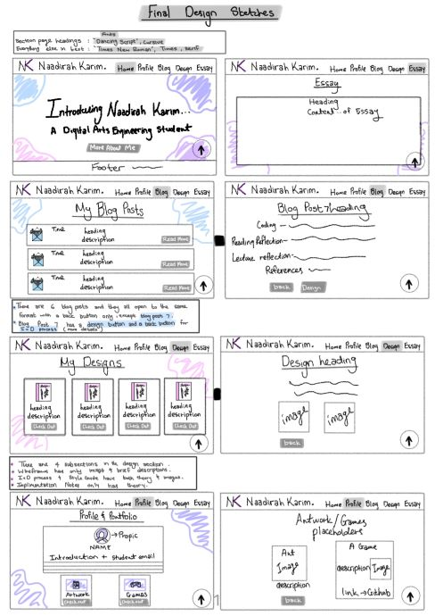
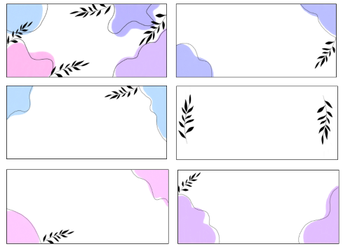
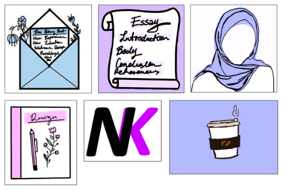

Style Guide
My Goal And Aesthetic-
My goal for this website is to provide users with an experience they will enjoy by portraying some of my personality throughout each webpage that will provide convenient navigation, intuitive interface, efficient elements of interface and functional design elements as well as uniqueness from my website by creating my own art through a minimalistic aesthetic, while using pastels.
Visual Design Elements-
The visual design elements I have used include shapes such as rectangles, squares, and circles. When I placed images on my website, I resized the images to lower the pixels. I have kept enough negative/white space to enhance the visual appeal and for creating balance throughout my webpages. The colours I have used for my website consist of pastel colours such as light pink (#ffbdf1), Mauve (#dcbfff), lavender blue (#bbb6ff), light blue (#bbdbff), black and different variations of grey. I used pastel colours to create a soft and calming effect while looking through my website. The reason why I used these elements of visual design was to make my website look clean, simple and aesthetically pleasing. I did not want my website to look like a circus with different variations of blues and purple’s. I would like to say that these colours along with the minimalistic aesthetic fit my being.


